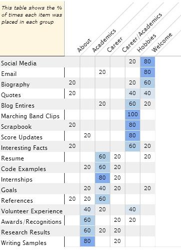

In order to record the opinions of others, I created the index cards using an online tool. The website called websort.net allowed me to create a free survey. The survey included a long list of items and a smaller list of groups. The groups represented the various main sections that I intend to have on my personal site. I decided upon the main sections based on the menu at the top of my current site. These groups were "Welcome", "Academics", "Career" and "Hobbies". I explained to the other sorters that I wanted them to organize the items in the order that was most logical to them. I did not allow for items to be in more than one category, but I did allow for the creation of new categories. In total, 5 people were surveyed.
The results were somewhat predictable. Many of the items only made sense to be in one particular group. However, the results were very useful when determining where to place new material. My goal is to have my personal site serve as a place for prospective employers to learn anything and everything about me. Much like a resume though, organization is very important. An employer may only want to see a specific piece of information and I want to be able to predict where they will look for it. By having the sorters place the new material including a resume, references, code samples, writing samples and goals among others in similar groups I can be more certain that I have choosen the correct one. In all, I agreed with the item placement seen below. Personally, I would be more interested in having a blog and quotes of the day on the welcome page, but I am open to different ideas.
For my final project, my goal is to create a personal website used to sell myself in the workplace. I want it to be informative, interactive and intersting. It needs to be able to help me stand out to employers. In order to achive this it must be well organized and full of good content.